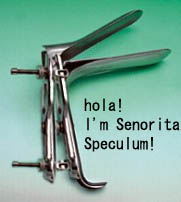

Although 氏 is pronounced SHI, it is STRONG for TEI!!!!
| SHI |
SHE is a member of the speculum family. |
|
I like to pretend that the family name in question is “Speculum" because that is what this mother looks like. 
|
| 彼氏 |
boyfriend.
★★★★☆
KUNKUN
|
| XXX 氏 |
Mr. xxx. ★★★★☆ SUF SUFFIX meaning 'Mr. XXX |
| 氏名 |
first AND last name. But you wouldn't ever SAY 'What's your shimei?'
In conversation, you'd just use 名前（なまえ） instead.
★☆☆☆☆
NP
In conversation, you'd just use 名前（なまえ） instead. ) |
| Meaning | Hint | Radical | |
|---|---|---|---|
| 民 | folk | MOUTH | 口 |
| 氏 | mr. | NO MOUTH |
Folk music is sung with the MOUTH.
Speculum goes in the hoo-hoo, not the mouth, so the speculum radical doesn't have a mouth.
|
name
名前 名____、姓____ 名字 氏 氏名 姓名 |
 KANJIDAMAGE
KANJIDAMAGE
 Number
1162
Number
1162